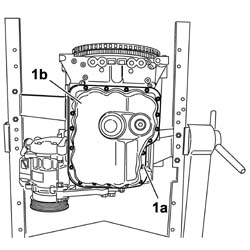
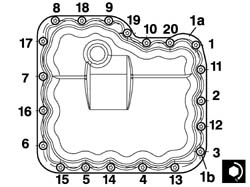
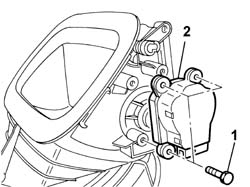

5040D75 AIR CONDITIONING RECIRCULATION FLAP CONTROL MOTOR - R.R.
- Path
- Procedures > 50 AUXILIARY UNITS > 5040 AIR CONDITIONING CASING AND COMPONENTS > 5040D AIR CONDITIONER CONTROLS > 5040D75 AIR CONDITIONING RECIRCULATION FLAP CONTROL MOTOR - R.R.
- Kind
- repair procedure (removal / refitting; the operation number is the code)
- Applies to
- all engines; all production periods
- Interactive page
- https://sloeber94.github.io/elrnDB-fUlss/en/#/179021667
Applies to: all engines; all production periods
 Removing
Removing
 Refitting
RefittingOp. 1004D40 ENGINE - POSITION ON STAND AND REMOVE
- Rotate the engine through 90° on the overhaul stand. 1. Undo the bolts (1a) and remove the crankcase sump (1b).

Applies to: all engines; all production periods
Refitting
Removing- Clean any sealant residues from the matching surfaces between the sump and the lower crankcase.
- Apply the recommended silicone sealant continuously without any breaks over the entire perimeter of the crankcase sump.
Component | Type | Description | Classification | Quantity |
|---|---|---|---|---|
LOWER ENGINE BLOCK GASKET | Silicon sealant | LOCTITE 5900 | - | 2 mm |
1. Position the crankcase sump (1a) and tighten the fixing bolts (1b) following the procedure described below and following the tightening order illustrated for each stage.
- Tighten the bolts marked in the diagram with the numbers 13, 15, 17.
- Tighten the bolts marked in the diagram with the numbers 13, 15, 17 to a torque of 0.2 daNm.
- Tighten the remaining seventeen bolts.
- Tighten the remaining seventeen bolts to a torque of 0.5 daNm following the order illustrated in the diagram.
- Tighten all the oil sump fixing bolts to the recommended torque following the order illustrated in the diagram.
Value daNm | Fastening | Component | Ø | |
|---|---|---|---|---|
1b | 0.8 | Bolt | ENGINE OIL SUMP | M6 |

Applies to: all engines; all production periods
Op. 1004D40 ENGINE - POSITION ON STAND AND REMOVE
Applies to: all engines; all production periods
Removing
RefittingOp. 5530B56 BATTERY DRIP TRAY COVER - R.R.
- Disconnect the negative battery terminal.
Op. 7040H29 FRONT PILLAR LOWER COVER (ONE), LEFT OR RIGHT - R.R.
- < R1 > [Both]
Op. 7040A45 FACIA RH SIDE COVER - R R
Op. 7040G22 FACIA COMPARTMENT LIGHT SWITCH/BULB HOLDER - R+R
Op. 7040A31 FLAP ASSEMBLY - R R
Op. 7040A44 SEAT INTERIOR GUARD - R R
Op. 7040A68 GRILLE FOR CENTRE DASHBOARD SPEAKER - R.R.
- < R1 > [Both]
Op. 7040A47 ODDMENTS POCKET UNDER DASHBOARD - R.R.
Op. 7040A60 UNDER FACIA TRIM - R+R
- < R1 > [Left side]
Op. 5010B70 SIDE CONNECTOR BETWEEN AIR. CON. CASING AND SOLENOID VALVES FOR REAR SEATS
- < R1 > [Left side]
Op. 7040A65 PASSENGER COMPARTMENT BOX LOCK , ONE , R R
- < R1 > [Both]
Op. 7040A89 SPEAKER GRILLE (ONE) LH OR RH ON INSTRUMENT FACIA - R R
Op. 2125C24 GEAR LEVER KNOB - R + R
Op. 7040A60 UNDER FACIA TRIM - R+R
Op. 7040A26 STEERING COLUMN TRIM - R+R
Op. 5580C18 AIR BAG MODULE - R+R
Op. 4110A10 STEERING WHEEL - R+R FOR REPLACEMENT OR CHECKS
Op. 5550A10 STALK UNIT ASSEMBLY - R+R
Op. 4110A26 STEERING WHEEL ADJUSTMENT PLATES - R.R.
Op. 5580E08 AERIAL FOR ALPHA CODE - R R
Op. 5520A10 IGNITION SWITCH ASSEMBLY - R+R
Op. 4110A30 SUPPORT WITH STEERING CONTROL SHAFTS - R+R - INCLUDES R+R STEERING WHEEL
Op. 5010C38 L/H OR R/H SIDE AIR OUTLET (ONE) ON FASCIA - R+R
- < R1 > [Both]
Op. 5010C30 CENTRAL AIR OUTLET ON FASCIA - R+R
Op. 7040A74 TRIM UNDER CONTROL PANEL - R.R.
Op. 5580C22 AIR BAG MODULE PASSANGER SIDE R R
Op. 5010B66 AIR DUCT BETWEEN TIMING CASING AND CENTRE VENT IN DASHBOARD - R.R.
Op. 5580P20 CENTRALINA DEL CONNECT - S.R.
Op. 5580P24 CONNECT CONTROL UNIT SUPPORT - R.R.
Op. 5580P22 CONNECT COOLING FAN - R.R.
Op. 5560B09 INSTRUMENT PANEL WITH CONNECT VIEWER - R.R.
Op. 5010D56 SOLAR SENSOR - R R AFTER CHECKING ELECTRICAL SYSTEM
Op. 7040A39 DEVICE FOR DRIVER`S SEAT SQUAB LUMBAR ADJUSTMENT - R R
-
Op. 7040A69 DASHBOARD COVER UPPER TRIM - R.R.
Op. 7040H30 FRONT PILLAR TRIM - R R
Op. 7040A10 L/H OR R/H FRONT SEAT (ONE) - R+R
Op. 5010B24 UNDER-FACIA AIR DUCTS R R
Op. 7040A98 INSTRUMENT FACIA TRIM SUPPORT BEAM - R R WITH FACIA REMOVED
Op. 5040C22 AIR CONDITIONING FAN ASSEMBLY - R.R.
- < R1 > [Both]
1. Undo the retaining bolts.

Applies to: all engines; all production periods
Refitting
Removing- Place the motor in position and tighten the fixing bolts.
Op. 5040C22 AIR CONDITIONING FAN ASSEMBLY - R.R.
Op. 7040A98 INSTRUMENT FACIA TRIM SUPPORT BEAM - R R WITH FACIA REMOVED
Op. 5010B24 UNDER-FACIA AIR DUCTS R R
Op. 7040A10 L/H OR R/H FRONT SEAT (ONE) - R+R
Op. 7040H30 FRONT PILLAR TRIM - R R
- < R1 > [Both]
Op. 7040A69 DASHBOARD COVER UPPER TRIM - R.R.
Op. 7040A39 DEVICE FOR DRIVER`S SEAT SQUAB LUMBAR ADJUSTMENT - R R
- < R1 > [Both]
Op. 5010D56 SOLAR SENSOR - R R AFTER CHECKING ELECTRICAL SYSTEM
Op. 5560B09 INSTRUMENT PANEL WITH CONNECT VIEWER - R.R.
Op. 5580P22 CONNECT COOLING FAN - R.R.
Op. 5580P24 CONNECT CONTROL UNIT SUPPORT - R.R.
Op. 5580P20 CENTRALINA DEL CONNECT - S.R.
Op. 5010B66 AIR DUCT BETWEEN TIMING CASING AND CENTRE VENT IN DASHBOARD - R.R.
Op. 5580C22 AIR BAG MODULE PASSANGER SIDE R R
Op. 7040A74 TRIM UNDER CONTROL PANEL - R.R.
Op. 5010C30 CENTRAL AIR OUTLET ON FASCIA - R+R
Op. 5010C38 L/H OR R/H SIDE AIR OUTLET (ONE) ON FASCIA - R+R
- < R1 > [Both]
Op. 4110A30 SUPPORT WITH STEERING CONTROL SHAFTS - R+R - INCLUDES R+R STEERING WHEEL
Op. 5520A10 IGNITION SWITCH ASSEMBLY - R+R
Op. 5580E08 AERIAL FOR ALPHA CODE - R R
Op. 4110A26 STEERING WHEEL ADJUSTMENT PLATES - R.R.
Op. 5550A10 STALK UNIT ASSEMBLY - R+R
Op. 4110A10 STEERING WHEEL - R+R FOR REPLACEMENT OR CHECKS
Op. 5580C18 AIR BAG MODULE - R+R
Op. 7040A26 STEERING COLUMN TRIM - R+R
Op. 7040A60 UNDER FACIA TRIM - R+R
Op. 2125C24 GEAR LEVER KNOB - R + R
Op. 7040A89 SPEAKER GRILLE (ONE) LH OR RH ON INSTRUMENT FACIA - R R
Op. 7040A65 PASSENGER COMPARTMENT BOX LOCK , ONE , R R
- < R1 > [Both]
Op. 5010B70 SIDE CONNECTOR BETWEEN AIR. CON. CASING AND SOLENOID VALVES FOR REAR SEATS
- < R1 > [Left side]
- < R1 > [Left side]
Op. 7040A60 UNDER FACIA TRIM - R+R
Op. 7040A47 ODDMENTS POCKET UNDER DASHBOARD - R.R.
Op. 7040A68 GRILLE FOR CENTRE DASHBOARD SPEAKER - R.R.
- < R1 > [Both]
Op. 7040A44 SEAT INTERIOR GUARD - R R
Op. 7040A31 FLAP ASSEMBLY - R R
Op. 7040G22 FACIA COMPARTMENT LIGHT SWITCH/BULB HOLDER - R+R
Op. 7040A45 FACIA RH SIDE COVER - R R
Op. 7040H29 FRONT PILLAR LOWER COVER (ONE), LEFT OR RIGHT - R.R.
- < R1 > [Both]
- Connect the negative battery terminal.
Op. 5530B56 BATTERY DRIP TRAY COVER - R.R.
- Check the operation of the systems involved using the Examiner or other diagnostic equipment.
Topics linked from this page (36)
- 2125C24 GEAR LEVER KNOB - R + R
- 4110A10 STEERING WHEEL - R+R FOR REPLACEMENT OR CHECKS
- 4110A26 STEERING WHEEL ADJUSTMENT PLATES - R.R.
- 4110A30 SUPPORT WITH STEERING CONTROL SHAFTS - R+R - INCLUDES R+R STEERING WHEEL
- 5010B66 AIR DUCT BETWEEN TIMING CASING AND CENTRE VENT IN DASHBOARD - R.R.
- 5010B68 AIR DUCT (ONE) LEFT OR RIGHT BETWEEN TIMING CASING CONNECTOR AND FAN FOR REAR SEATS - R.R.
- 5010B70 SIDE CONNECTOR BETWEEN AIR. CON. CASING AND SOLENOID VALVES FOR REAR SEATS
- 5010C30 CENTRAL AIR OUTLET ON FASCIA - R+R
- 5010C38 L/H OR R/H SIDE AIR OUTLET (ONE) ON FASCIA - R+R
- 5010D56 SOLAR SENSOR - R R AFTER CHECKING ELECTRICAL SYSTEM
- 5530B56 BATTERY DRIP TRAY COVER - R.R.
- 5520A10 IGNITION SWITCH ASSEMBLY - R+R
- 5550A10 STALK UNIT ASSEMBLY - R+R
- 5560B09 INSTRUMENT PANEL WITH CONNECT VIEWER - R.R.
- 5580C18 AIR BAG MODULE - R+R
- 5580E08 AERIAL FOR ALPHA CODE - R R
- 5580P20 CENTRALINA DEL CONNECT - S.R.
- 5580P22 CONNECT COOLING FAN - R.R.
- 5580P24 CONNECT CONTROL UNIT SUPPORT - R.R.
- 7040A26 STEERING COLUMN TRIM - R+R
- 7040A31 FLAP ASSEMBLY - R R
- 7040A39 DEVICE FOR DRIVER`S SEAT SQUAB LUMBAR ADJUSTMENT - R R
- 7040A44 SEAT INTERIOR GUARD - R R
- 7040A45 FACIA RH SIDE COVER - R R
- 7040A47 ODDMENTS POCKET UNDER DASHBOARD - R.R.
- 7040A60 UNDER FACIA TRIM - R+R
- 7040A65 PASSENGER COMPARTMENT BOX LOCK , ONE , R R
- 7040A68 GRILLE FOR CENTRE DASHBOARD SPEAKER - R.R.
- 7040A69 DASHBOARD COVER UPPER TRIM - R.R.
- 7040A89 SPEAKER GRILLE (ONE) LH OR RH ON INSTRUMENT FACIA - R R
- 7040A98 INSTRUMENT FACIA TRIM SUPPORT BEAM - R R WITH FACIA REMOVED
- 7040G22 FACIA COMPARTMENT LIGHT SWITCH/BULB HOLDER - R+R
- 7040H29 FRONT PILLAR LOWER COVER (ONE), LEFT OR RIGHT - R.R.
- 7040H30 FRONT PILLAR TRIM - R R
- E2010 SIDE LIGHTS / NO. PLATE LIGHTS
- E3010 HORNS